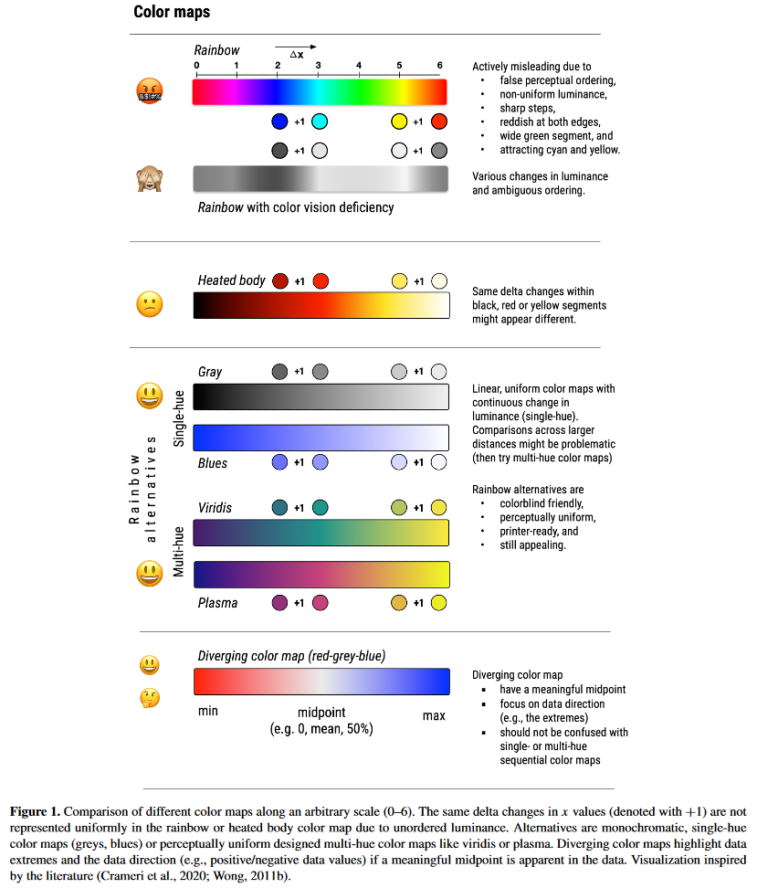
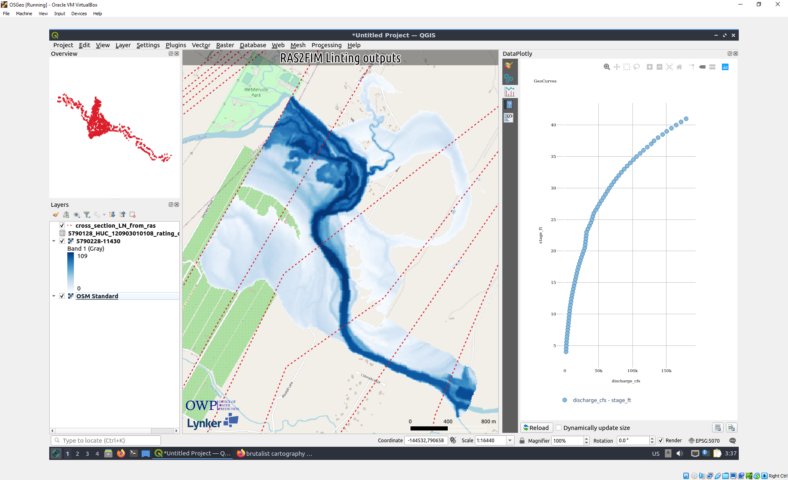
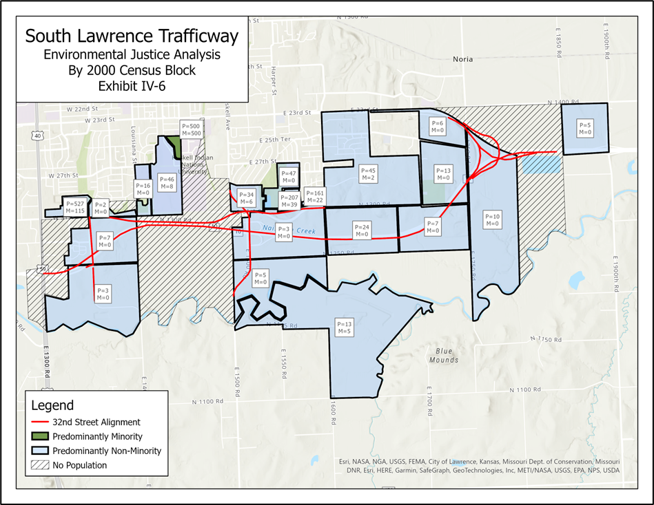

Cartography

(Stoelzle and Stein 2021)Other tips: Put a bird on it.
tutorial
how-to guides
Reference
Examples
Interactive
- Ancient Earth Globe: What the earth looked like n years ago ### Other resources https://nationalequityatlas.org/lab/get-started-data-visualization https://handsondataviz.org/ https://blog.mapbox.com/7-best-practices-for-mapping-a-pandemic-9f203576a132 https://rpubs.com/KingaHill/947744 https://environmentalinformatics-marburg.github.io/mapview/popups/html/popups.html https://flatgeobuf.org/examples/leaflet/filtered.html https://stackoverflow.com/questions/50111566/applying-leaflet-map-bounds-to-filter-data-within-shiny https://plugins.qgis.org/planet/user/29/tag/uncategorized/#:~:text=From%20the%20Print%20Layout%20toolbar,to%20a%20circular%20shape!).
Explanation
About Brutalist Cartography

Brutalist Cartography is a term of my own making which I use to describe the way I prepare the QGIS window for a screenshot. Even if you’ve mastered the toolset and have the eye for aesthetics, good cartography can take quite a while to assemble and present. That artistic flair is usually appreciated by all, but can slow the iteration process down quite substantially and is secondary to the main task of that map (for most use cases: see [[20240508224456]] Defining roles and goals), which is to place a tractable example of a theoretical state of the data in front of someone else with the goal of exampling problems, placing extra geographic context on a piece of data, or simply adding a better looking (in my opinion) screenshot.
To accomplish Brutalist cartography, one simply turns off most of the QGIS user interface while more prominently accentuation an organized legend, an overview window, and some of the more common map decoration items like the corner attribution image and the scale bar.
As a helpful note to future me, the panels that are typically turned on include: Panels: - [ ] Browser - [ ] Layers Toolbars: - [ ] Annotations - [ ] Attributes - [ ] Data Source Manager - [ ] Digitizing - [ ] Help - [ ] Label - [ ] Manage layers - [ ] Map Navigation - [ ] Mesh digitization - [ ] Plugin - [ ] Projecct - [ ] Selection - [ ] Vector - [ ] Web
Old holdover
Although we could spend the day dissecting all the minute cartographic and stylistic errors the authors may have made in there initial map, the larger issue is the disingenuous presentation of the data.
The map in the inital assessment, shown below and recreated for demonstration porpouses, was the map provided for the impact assesment. 

The assessment makes it appear that only 1 census block of predominantly minority populations are affected, when looking at the breakdown of impacted population as a total of the study domain we see those are far closer to a 50/50 distribution
Other resources:
```{r}
# leaflet::leaflet() %>%
# leaflet::addProviderTiles(provider = providers$Stamen.TonerLabels) %>%
# leafgl::addGlPoints(feature_nodes,fillColor = 'green',group = "pts") %>%
# leafgl::addGlPolygons(shcism_ahull_poly,fillOpacity = 1,stroke = TRUE,color = 'black',popup = feature_template_name, group = "huc")
leaflet::leaflet() %>%
leaflet::addProviderTiles("Stamen.Terrain",group = "Stamen.Terrain") %>%
leafgl::addGlPolygons(sf::st_cast(features_subset,'POLYGON'),fillOpacity = 0,stroke = TRUE,color = 'black') %>%
leafgl::addGlPolygons(sf::st_cast(my_features_subset,'POLYGON'),fillOpacity = 0,stroke = TRUE,color = 'black')
leafem::addFeatures(aoi,stroke = TRUE,color = 'black',popup = 'huc10') %>%
leafem::addFeatures(features,stroke = TRUE,color = 'black',popup = 'huc10') %>%
leafem::addFeatures(schsim_nodes,stroke = TRUE,color = 'black',popup = 'huc10')
```Cartography with digital tools
If you’ve spent any time in this domain, you might find it becomes pretty easy to guess what tool was used to make a graph/map. Tools like matplotlib or ggplot are extensible but the styles tend to be pretty cookie-cutte. The following are my own cookie cutters that make slapping a map together using a design language ## Making a map #### The most basic map
```{r}
leaflet::leaflet(options = leafletOptions(preferCanvas = TRUE)) %>%
leaflet::addProviderTiles("OpenStreetMap",group = "OpenStreetMap") %>%
leaflet::addProviderTiles("Stamen.Toner",group = "Stamen.Toner") %>%
leaflet::addProviderTiles("Stamen.Terrain",group = "Stamen.Terrain") %>%
leaflet::addProviderTiles("Esri.WorldStreetMap",group = "Esri.WorldStreetMap") %>%
leaflet::addProviderTiles("Wikimedia",group = "Wikimedia") %>%
leaflet::addProviderTiles("CartoDB.Positron",group = "CartoDB.Positron") %>%
leaflet::addProviderTiles("Esri.WorldImagery",group = "Esri.WorldImagery") %>%
leafgl::addGlPoints(unprocessed_nodes,fillColor = 'red',group = "pts") %>%
leafgl::addGlPoints(processed_nodes,fillColor = 'green', group = "pts") %>%
leafem::addFeatures(ahulls,opacity = 1,fillOpacity = 0,weight = 2,color = 'black', group = "huc") %>%
# leafgl::addGlPolygons(ahulls,fillOpacity = 0,stroke = TRUE,color = 'black',popup="huc10", group = "huc") %>%
leaflet::addLegend("bottomright",colors = c("green","red"),
labels = c(paste0("SCHISM nodes: n=",processed_nodes_count), paste0("outside of huc bounds: n=",unprocessed_nodes_count)),
title = "SCHISM Domain (thinned)",opacity = 1) %>%
leaflet::addLayersControl(
baseGroups = c(
"OpenStreetMap", "Stamen.Toner",
"Stamen.Terrain", "Esri.WorldStreetMap",
"Wikimedia", "CartoDB.Positron", "Esri.WorldImagery"
),
position = "topleft",
overlayGroups = c("pts","huc"))
```A little more
Basemaps
Scrape [[SCHISM.qmd]] SCHISM.qmd https://jakob.schwalb-willmann.de/basemaps/reference/basemap.html https://r-graph-gallery.com/324-map-background-with-the-ggmap-library.html https://github.com/Chrisjb/basemapR
```{r}
my_map_window <- AOI::geocode("Fort Collins",bbox = TRUE)
## ==========
mapview::mapview(my_map_window)
# ==
# Dark, positron, voyager, mapnik,
ggplot2::ggplot() +
basemapR::base_map(bbox = sf::st_bbox(my_map_window), basemap = 'mapnik', increase_zoom = 2, nolabels=FALSE) +
ggplot2::geom_sf(data = my_map_window, fill = NA)
# ==
bm <- basemaps::basemap_terra(ext = sf::st_bbox(sf::st_transform(my_map_window,sf::st_crs("EPSG:3857"))),map_service = "esri", map_type = "world_imagery", verbose = FALSE) %>%
as("SpatRaster")
ggplot2::ggplot() +
tidyterra::geom_spatraster_rgb(data = bm) +
ggplot2::geom_sf(data = my_map_window, fill = NA)
# ==
leaflet::leaflet() %>%
leaflet::addProviderTiles("CartoDB.Positron",group = "CartoDB.Positron") %>%
leafem::addFeatures(my_map_window,opacity = 1,fillOpacity = 0,weight = 2,color = 'black')
```Adding vector layers
```{r}
leaflet::leaflet() %>%
leaflet::addProviderTiles(provider = providers$Stamen.TonerLabels) %>%
leafgl::addGlPolygons(sf::st_transform(sf::st_cast(features_to_process,"POLYGON"),sf::st_crs("EPSG:4326")),fillOpacity = 0,stroke = TRUE,color = 'black', group = "huc") %>%
leafgl::addGlPoints(sf::st_transform(valid_nodes,sf::st_crs("EPSG:4326")),fillColor = 'green',group = "pts") %>%
leafgl::addGlPolygons(sf::st_transform(sf::st_cast(feature,"POLYGON"),sf::st_crs("EPSG:4326")),fillOpacity = 0,stroke = TRUE,color = 'black', group = "feat") %>%
addLayersControl(
overlayGroups = c("pts","huc","feat"),
options = layersControlOptions(collapsed = FALSE)
)
features_to_process <- features_still_needed[schsim_nodes,]
leafgl::addGlPolygons(sf::st_transform(shcism_ahull_poly,sf::st_crs("EPSG:4326")),fillOpacity = 0,stroke = TRUE,color = 'black', group = "huc") %>%
leafgl::addGlPolygons(sf::st_transform(feature_ahull,sf::st_crs("EPSG:4326")),fillOpacity = 0,stroke = TRUE,color = 'red', group = "huc")
```Adding raster layers
That’s exactly what COG is; it has overviews built in and acts as a tile cache. COG has grown wildly in the last few years. COG use range requests to extract part of a raster file out of cloud storage, this includes those small overviews that act as a tile cache. The above map uses a 1.5GB National Land Cover raster and the associated color table. Only overviews or small sections are used to draw the map layer depending on zoom and extent. The entire file is never downloaded. The initial load of the above map downloads < 1M of raster data.
```{r}
library("sf")
library("rgdal")
library("gdalUtilities")
library("shiny")
library("raster")
library("terra")
library("stars")
library("leaflet")
library("r-spatial/leafem")
library("r-spatial/leafgl")
library("mapview")
# Works (draws in map)
mapview::mapview(raster::raster('C:/Users/James.Coll/Desktop/data/102500/COG102500catchmask_p.tif'))
# Does not work
mapview::mapview(stars::read_stars('C:/Users/James.Coll/Desktop/data/102500/COG102500catchmask_p.tif'))
# How to use local COG here???
leaflet() %>%
addTiles(group = "osm") %>%
#addProviderTiles("Esri.WorldImagery", group = "esri") %>%
addMapPane("cog", zIndex = 500) %>%
setView(lng = 11.35, lat = 46.5, zoom = 12) %>%
leafem:::addCOG(
url = raster_lcog
, group = "corine"
, opacity = 0.8
, options = list(pane = "cog")
, resolution = 128
, autozoom = FALSE
)
## A working example of above:
hosturl <- 'http://oin-hotosm.s3.amazonaws.com/56f9b5a963ebf4bc00074e70/0/56f9c2d42b67227a79b4faec.tif'
leaflet() %>%
addTiles() %>%
leafem:::addCOG(
url = hosturl
, opacity = 1
, options = list(pane = "cog")
, resolution = 128
, autozoom = FALSE
)
url <- 'http://oin-hotosm.s3.amazonaws.com/56f9b5a963ebf4bc00074e70/0/56f9c2d42b67227a79b4faec.tif'
leaflet() %>%
addTiles(group = "osm") %>%
#addProviderTiles("Esri.WorldImagery", group = "esri") %>%
addMapPane("cog", zIndex = 500) %>%
setView(lng = 168.5, lat = -17.5, zoom = 12) %>%
leafem:::addCOG(
url = url
, group = "corine"
, opacity = 0.8
, options = list(pane = "cog")
, resolution = 128
, autozoom = FALSE
)
```Adding map flair
```{r}
leaflet() %>%
addTiles() %>%
leafem:::addFgb(
url = url
# , group = "counties"
# , label = "NAME"
, popup = TRUE
, fill = TRUE
, fillColor = "blue"
, fillOpacity = 0.6
, color = "black"
, weight = 1
) %>%
addLayersControl(overlayGroups = c("counties")) %>%
addMouseCoordinates() %>%
setView(lng = -105.644, lat = 51.618, zoom = 3)
```Writing her out
```{r}
unlink(file.path(output_folder_name,"SCHISM_based_FIM_domain_files"),recursive=TRUE)
unlink(file.path(output_folder_name,"SCHISM_based_FIM_domain.html"))
# m = leaflet(height=1000, width=1000) %>%
m = leaflet::leaflet(options = leafletOptions(preferCanvas = TRUE)) %>%
leaflet::addProviderTiles("OpenStreetMap",group = "OpenStreetMap") %>%
leaflet::addProviderTiles("Stamen.Toner",group = "Stamen.Toner") %>%
leaflet::addProviderTiles("Stamen.Terrain",group = "Stamen.Terrain") %>%
leaflet::addProviderTiles("Esri.WorldStreetMap",group = "Esri.WorldStreetMap") %>%
leaflet::addProviderTiles("Wikimedia",group = "Wikimedia") %>%
leaflet::addProviderTiles("CartoDB.Positron",group = "CartoDB.Positron") %>%
leaflet::addProviderTiles("Esri.WorldImagery",group = "Esri.WorldImagery") %>%
leafgl::addGlPoints(unprocessed_nodes,fillColor = 'red',group = "pts") %>%
leafgl::addGlPoints(processed_nodes,fillColor = 'green', group = "pts") %>%
leafem::addFeatures(ahulls,opacity = 1,fillOpacity = 0,weight = 2,color = 'black', group = "huc") %>%
# leafgl::addGlPolygons(ahulls,fillOpacity = 0,stroke = TRUE,color = 'black',popup="huc10", group = "huc") %>%
leaflet::addLegend("bottomright",colors = c("green","red"),
labels = c(paste0("SCHISM nodes: n=",processed_nodes_count), paste0("outside of huc bounds: n=",unprocessed_nodes_count)),
title = "SCHISM Domain (thinned)",opacity = 1) %>%
leaflet::addLayersControl(
baseGroups = c(
"OpenStreetMap", "Stamen.Toner",
"Stamen.Terrain", "Esri.WorldStreetMap",
"Wikimedia", "CartoDB.Positron", "Esri.WorldImagery"
),
position = "topleft",
overlayGroups = c("pts","huc"))
mapview::mapshot(m,file.path(output_folder_name,'SCHISM_based_FIM_domain.html'))
```Making a dashboard
TODO
Resources:
https://tomjenkins.netlify.app/tutorials/r-leaflet-introduction/